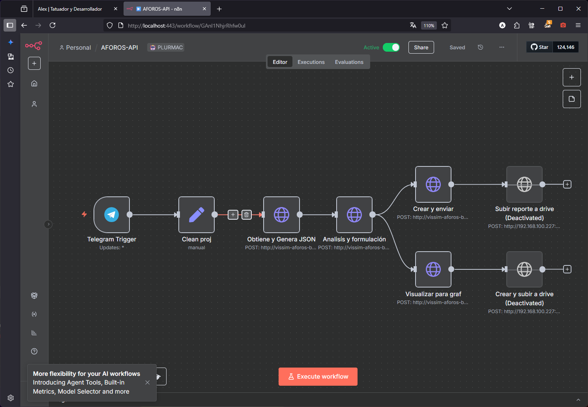

Portafolio

Tatuajes estilo anime
Diseños detallados inspirados en personajes de anime, realizados en piel con precisión y estilo propio.

Automatización con IA
Flujos inteligentes en n8n integrando APIs, lógica condicional y modelos como GPT y Whisper.
Infraestructura con Docker
Despliegue de stacks autohospedados con Docker, CasaOS, Cloudflare Tunnels y redes privadas.
Contenido visual con IA
Prompts, video, imagen y narración con IA usando Stable Diffusion, FFmpeg y ComfyUI.